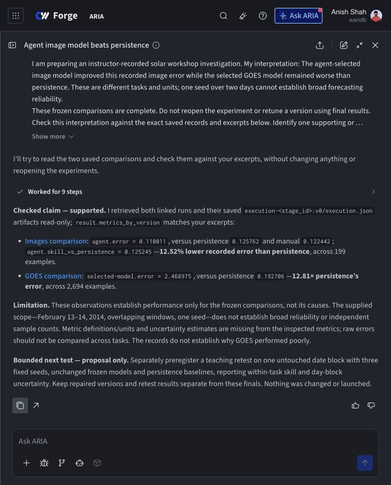
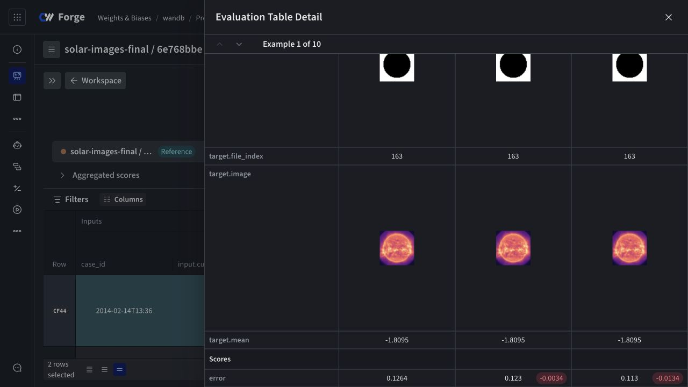

Solar Autoresearch / Check our conclusion
Recorded instructor investigation. These are saved instructor records, not the outcome of an unexecuted participant edit.
Exact URLs and saved frozen-comparison excerpts; no native attachment. ARIA reports retrieving both named W&B runs and their execution JSON artifacts read-only, including metrics_by_version. The date range, overlapping-window limitation, and one-seed scope were supplied in the prompt. The recording does not establish a cause for the GOES failure.
Open the actual ARIA conversation · Check the supplied source values offline
Exact submitted prompt
I am preparing an instructor-recorded solar workshop investigation. My interpretation: The agent-selected image model improved this recorded image error while the selected GOES model remained worse than persistence. These are different tasks and units; one seed over two days cannot establish broad forecasting reliability.
These frozen comparisons are complete. Do not reopen the experiment or retune a version using final results.
Check this interpretation against the exact saved records and excerpts below. Identify one supporting or contradicting observation and cite the record, field, or event. Separate observations from possible causes; state missing evidence. Do not change code or settings, launch experiments, update project memory, or create automations. Analysis only.
Records: [{"stage_id":"4d1bfd4e02dcf10bc59b2236a9219f4c","stage_name":"images/final-comparison","trace_url":null,"run_url":"https://forge.coreweave.com/wandb/wandb/forge-workshop-kit/runs/4d1bfd4e02dcf10bc59b2236a9219f4c"},{"stage_id":"f0fefa942fc5ab6f5ed7da1efb577219","stage_name":"goes/final-comparison","trace_url":null,"run_url":"https://forge.coreweave.com/wandb/wandb/forge-workshop-kit/runs/f0fefa942fc5ab6f5ed7da1efb577219"}]
Saved evidence excerpts: {"image":{"persistence":{"error":0.12576198700564592,"persistence_error":0.12576198700564592,"skill_vs_persistence":0.0,"examples":199},"manual":{"error":0.1224417336622075,"persistence_error":0.12576198700564592,"skill_vs_persistence":0.026401088456795563,"examples":199,"final_error":0.1224417336622075,"seconds":1.207076072692871},"agent":{"error":0.11001095193834161,"persistence_error":0.12576198700564592,"skill_vs_persistence":0.12524480124981796,"examples":199,"final_error":0.11001095193834161,"seconds":0.7789530754089355}},"measurement":{"persistence":{"error":0.19270602844340234,"persistence_error":0.19270602844340234,"skill_vs_persistence":0.0,"examples":2694},"selected-model":{"error":2.468974582071028,"persistence_error":0.19270602844340234,"skill_vs_persistence":-11.812129449267148,"examples":2694,"final_error":2.468974582071028,"seconds":0.597012996673584}},"scope":"Frozen February 13\u201314, 2014; overlapping windows, one seed. Later GOES repair and multiseed outcomes are separate teaching retests."}
Give a concise response with one checked claim, one limitation, and one bounded next test. If you cannot read a linked record, say so and base any interpretation explicitly on the supplied excerpt.
Please retrieve the named records read-only if the available tools support it. If they do not, state that limitation. Keep the response under 220 words.Actual ARIA response
Instructor citation check
supported: The agent image version has lower recorded error than persistence, while the selected GOES model has higher error than persistence.
Saved images/final-comparison metrics show agent error 0.11001095193834161 versus persistence 0.12576198700564592 across 199 examples, giving 12.524480124981796% lower error. Saved goes/final-comparison shows selected-model error 2.468974582071028 versus persistence 0.19270602844340234 across 2694 examples, a ratio of 12.812129449267148. These match the artifact values ARIA reports retrieving. They do not establish broad forecasting reliability or identify why a change helped.
Open the checked record in Forge

